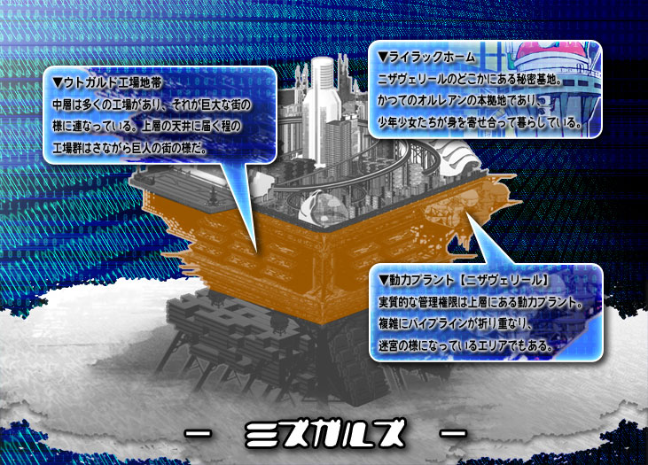

▼中層【 ミズガルズ 】 関連ワード

民主機構オルレアンの管轄層。
一般的な市民がもっとも多く住むエリア。
エリアの半分以上が工場地帯であり、アースガルズの下請け的な意味合いが強い。
アースガルズとヘルヘイムを繋ぐエリアである為か、様々な情報が集まるエリアでもある。
天井には人工太陽光のライトが差し、
中心エリアにいるものは実際の太陽を知らない者なども多い。
孤児院でもあるライラックホーム、
能力犯罪に対する自警団バスターライラック、
様々な活動支援や自治に務める管理局スヴァリン、
ユグドラシルの修理組織の中枢である職人組合モータソグニルなど、市民たちが多く参加している組織が目立つ。
エリアの半分以上が工場地帯であり、アースガルズの下請け的な意味合いが強い。
アースガルズとヘルヘイムを繋ぐエリアである為か、様々な情報が集まるエリアでもある。
天井には人工太陽光のライトが差し、
中心エリアにいるものは実際の太陽を知らない者なども多い。
孤児院でもあるライラックホーム、
能力犯罪に対する自警団バスターライラック、
様々な活動支援や自治に務める管理局スヴァリン、
ユグドラシルの修理組織の中枢である職人組合モータソグニルなど、市民たちが多く参加している組織が目立つ。
【関連組織】 オルレアン、チーム世紀末覇者
中層の管理組織。
レギュラー勢力【 オルレアン 】を参照。
レギュラー勢力【 オルレアン 】を参照。
【関連NPC】 アリス＝ディアーネ
レギュラー勢力【 オルレアン
】の項を参照。
中層におけるエネミー勢力。暴走族や暴力犯罪を主に起こす迷惑集団。
反面、彼らの悪行でＹＤＦやバスターライラックといった治安維持の組織が活発である面もある。
エネミー勢力【 チーム世紀末覇者 】を参照。
反面、彼らの悪行でＹＤＦやバスターライラックといった治安維持の組織が活発である面もある。
エネミー勢力【 チーム世紀末覇者 】を参照。
【関連NPC】 キング
エネミー勢力【 チーム世紀末覇者 】の項を参照。
中層と下層を繋ぐゲート。
認証は行われるが、基本的に各層の住民は往来フリーパスである。
ただし下層民は中層に１週間以上の滞在をしている事が確認された時点で捕縛対象となる。
認証は行われるが、基本的に各層の住民は往来フリーパスである。
ただし下層民は中層に１週間以上の滞在をしている事が確認された時点で捕縛対象となる。
オルレアンの本拠地。バスターライラックの拠点でもあり、孤児院でもある。
孤児院としての仕事はもちろん、地域でのボランティア活動などを行っており、
時折びっくりするほどの情報網を持っていたりする。
孤児院としての仕事はもちろん、地域でのボランティア活動などを行っており、
時折びっくりするほどの情報網を持っていたりする。
子供や中層市民からの信頼は中層最高レベル。
オルレアンの拠点でありながらちょっと貧乏である。動力プラント【 ニザヴェリール 】に隣接している。
オルレアンの拠点でありながらちょっと貧乏である。動力プラント【 ニザヴェリール 】に隣接している。
【関連組織】 オルレアン
中層の民間警備隊。治安維持はもちろんのこと、チーム世紀末覇者の抑制に一役買っている。
ライラックホームを本部としている。
レギュラー勢力【 バスターライラック 】の項を参照。
ライラックホームを本部としている。
レギュラー勢力【 バスターライラック 】の項を参照。
【関連組織】 オルレアン
【関連NPC】 レオン＝シグルス
レギュラー勢力【 バスターライラック 】の項を参照。
中層の様々の情報の管理局。
ウトガルド工場地帯に本部を構え、日々中層民のために尽力している。
レギュラー勢力【 スヴァリン 】の項を参照。
ウトガルド工場地帯に本部を構え、日々中層民のために尽力している。
レギュラー勢力【 スヴァリン 】の項を参照。
【関連組織】 オルレアン
【関連NPC】 ミルヴァ＝メルトリア
レギューラー勢力【 スヴァリン
】の項を参照。
ミルヴァが店長を務めるＢＡＲ。
店内にはジャズミュージックが流れ、シックな雰囲気のお洒落なＢＡＲである。オカマバーではない。
レジスタンス時代から経営しており、情報屋のたまり場でもある。
ミルヴァ自身は最近スヴァリンの仕事が忙しく、店に顔を出せない事を嘆いているようだ。
マグタフを混ぜたカクテル【 パープルアイ 】が人気。
店内にはジャズミュージックが流れ、シックな雰囲気のお洒落なＢＡＲである。オカマバーではない。
レジスタンス時代から経営しており、情報屋のたまり場でもある。
ミルヴァ自身は最近スヴァリンの仕事が忙しく、店に顔を出せない事を嘆いているようだ。
マグタフを混ぜたカクテル【 パープルアイ 】が人気。
【関連組織】 オルレアン
【関連NPC】 ミルヴァ＝メルトリア
レギューラー勢力【 スヴァリン 】の項を参照。
中層に限らず、ユグドラシル全土をメンテナンスする職人組合。
彼らがユグドラシルを支えているといっても過言ではない。ウトガルド工場地帯に本部を構える。
レギュラー勢力【 モーターソグニル 】の項を参照。
彼らがユグドラシルを支えているといっても過言ではない。ウトガルド工場地帯に本部を構える。
レギュラー勢力【 モーターソグニル 】の項を参照。
【関連組織】 オルレアン
【関連NPC】 グリンピース＝ヒースメイル
レギュラー勢力【 モーターソグニル 】の項を参照。
ユグドラシルにおける最大の動力プラント。ユグドラシル全土の約６０％の動力を担う。
増設に増設を重ね、パイプラインが複雑に絡み合う巨大な動力施設。
管理権限自体は上層のグングニルが持つ。
増設に増設を重ね、パイプラインが複雑に絡み合う巨大な動力施設。
管理権限自体は上層のグングニルが持つ。
【関連組織】 グングニル
ビルが幾重にも連なっている工場ビル郡。中層の約半分を占める。
天井にも届く建物群はさながら巨人の街の様であり、ユグドラシルの工業品や輸出品を支える。
複雑な工場群は下層のグニパヘリル街に次いで複雑になっており、
様々な企業をはじめ、犯罪集団も潜んでいるエリアとなっている。
天井にも届く建物群はさながら巨人の街の様であり、ユグドラシルの工業品や輸出品を支える。
複雑な工場群は下層のグニパヘリル街に次いで複雑になっており、
様々な企業をはじめ、犯罪集団も潜んでいるエリアとなっている。
３層中でもっとも多くＹＤＦが投入されており、バスターライラックも貢献してはいるが、
中層における犯罪発生件数は増すばかり。モヒカンの巣窟でもあり、チーム世紀末覇者の根城でもある。
中層における犯罪発生件数は増すばかり。モヒカンの巣窟でもあり、チーム世紀末覇者の根城でもある。
【関連組織】 スヴァリン、モーターソグニル、チーム世紀末覇者
ウトガルド工場地帯の一角。
家畜生産を主とする畜産業を担う。クローン豚が一大産業の１つ。
高品質なクローン牛の研究も行っているが、高級肉の産業部分は施設上どうしても上層に遅れをとっている。
ここのでクローン家畜の実験の失敗により、
中層全域には巨大ねずみなどが多く害獣として徘徊するようになった経緯がある。
管理権限はオルレアンにあるが、その運営の多くを民営に委託している。
家畜生産を主とする畜産業を担う。クローン豚が一大産業の１つ。
高品質なクローン牛の研究も行っているが、高級肉の産業部分は施設上どうしても上層に遅れをとっている。
ここのでクローン家畜の実験の失敗により、
中層全域には巨大ねずみなどが多く害獣として徘徊するようになった経緯がある。
管理権限はオルレアンにあるが、その運営の多くを民営に委託している。
【関連組織】 オルレアン
チーム世紀末覇者内のレディースチーム。
暴力性でいえば男性陣よりも派手であり、
暴走行為、暴力、恐喝、窃盗、強盗、麻薬に至るまで幅広く犯罪に手を染める。
むしろ世紀末覇者による凶悪犯罪は彼女らがメインであると言っても過言ではない。
暴力性でいえば男性陣よりも派手であり、
暴走行為、暴力、恐喝、窃盗、強盗、麻薬に至るまで幅広く犯罪に手を染める。
むしろ世紀末覇者による凶悪犯罪は彼女らがメインであると言っても過言ではない。
ただし、売春やそれに準ずる犯罪に関しては固く禁じており、
それに付随する犯罪行為も見つけた場合は粛正という名のリンチに走り、潰す。
そのためウトガルド工場地帯での性犯罪率は極端に少ない。
それに付随する犯罪行為も見つけた場合は粛正という名のリンチに走り、潰す。
そのためウトガルド工場地帯での性犯罪率は極端に少ない。
彼女らのモットーは「男より強くあれ」であり、
世紀末覇者内でもそれは変わらず、男性陣とチーム内で対立する事もしばしばである。
世紀末覇者内でもそれは変わらず、男性陣とチーム内で対立する事もしばしばである。
【関連組織】 チーム世紀末覇者
【関連NPC】 マリー＝ククルシル
エネミー勢力【 チーム世紀末覇者 】の項を参照。
チーム世紀末覇者における、キングに次いでの代名詞。
３人合わせて「バーバリアンズ」と名乗るが、その能力の関係で「床屋三兄弟」と呼ばれる。
誰が呼んだか、様々なところに出没し、大きすぎない小さい悪事をたくさん行っている。
チーム世紀末覇者が広がっている原因はある意味でこのモヒカン三連星の広報活動が大きいとも言われる。
広報活動をするが故にか、時々慈善活動もするため心理的にも非常に捕まえにくい。
３人合わせて「バーバリアンズ」と名乗るが、その能力の関係で「床屋三兄弟」と呼ばれる。
誰が呼んだか、様々なところに出没し、大きすぎない小さい悪事をたくさん行っている。
チーム世紀末覇者が広がっている原因はある意味でこのモヒカン三連星の広報活動が大きいとも言われる。
広報活動をするが故にか、時々慈善活動もするため心理的にも非常に捕まえにくい。
ＹＤＦに追われ、バスターライラックに追われても、それでも捕まる事はなく、逃げに関しては超エキスパート。
今一度言うが、大きすぎる犯罪には関わらない。
今一度言うが、大きすぎる犯罪には関わらない。
【関連組織】 チーム世紀末覇者
【関連NPC】 ガイ、オーガ、マシュー
エネミー勢力【 チーム世紀末覇者 】の項を参照。
中層におけるＹＤＦ隊の１つ。元々オルレアンを支持していた者が多く、中層に対する愛着心が強い。
主な警備エリアはウトガルド工場地帯。
主な警備エリアはウトガルド工場地帯。
オルレアンが民主機構として発足後、アリスの名前から「不思議の国のアリス」にちなんでトランプ隊と名づけられた。
正義感が強い者が多く所属し、熱意ある警察活動を盛んに行う。
その反面、若干暑苦しいともっぱらの評判。市民の親しみは大きい。
正義感が強い者が多く所属し、熱意ある警察活動を盛んに行う。
その反面、若干暑苦しいともっぱらの評判。市民の親しみは大きい。
【関連NPC】 サン＝プルキャーラ
２４歳 男性 能力タイプ/クリエイター 能力名/バーンナックル
２４歳 男性 能力タイプ/クリエイター 能力名/バーンナックル
正義の心を持つ熱血漢。熱意あるトランプ隊の中でも特に暑苦しい。
拳から炎を放つサイキッカー能力【 バーンナックル 】を持つ。
耐閃光ヘルメットを常時つけ、耐熱グローブから炎熱を放つ青年。
拳から炎を放つサイキッカー能力【 バーンナックル 】を持つ。
耐閃光ヘルメットを常時つけ、耐熱グローブから炎熱を放つ青年。
日夜中層中を駆け回り、チーム世紀末覇者のモヒカンをはじめとした犯罪を多く撲滅している。
能力は決して低くないが、空回りも非常に多い。90度の最敬礼を元気よくこなし、実直に何事にも当たる。
エデン隊のエルマー、中央隊のアキラ、１３番隊のフェリコの後輩にあたる。
能力は決して低くないが、空回りも非常に多い。90度の最敬礼を元気よくこなし、実直に何事にも当たる。
エデン隊のエルマー、中央隊のアキラ、１３番隊のフェリコの後輩にあたる。
「大丈夫か！！ＹＤＦだ！！！安心してくれ！！！！」
「すまない！俺がもっとはやくきていれば！！！！」
「すまない！俺がもっとはやくきていれば！！！！」
性能：基礎４ｐステータス（通常ＰＣスペック）